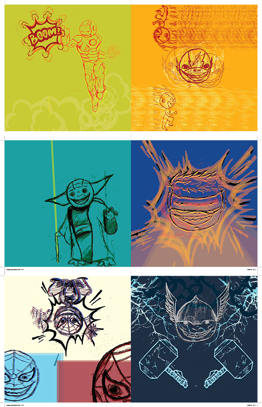
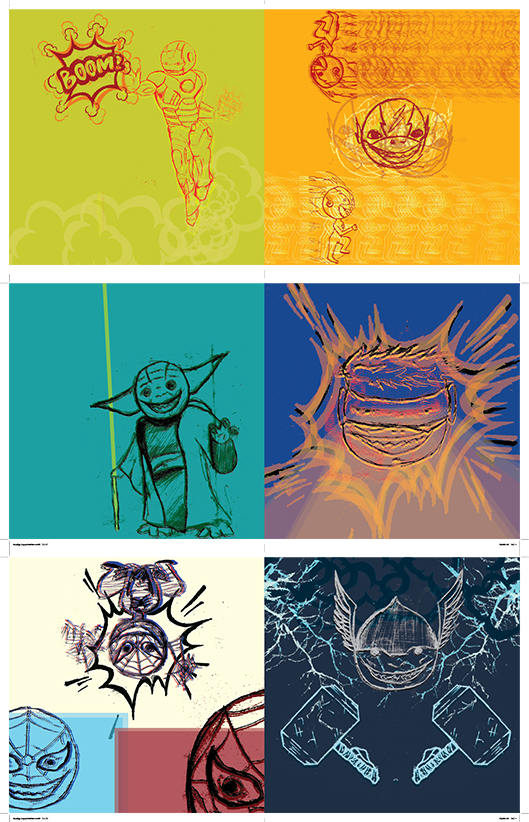

Vault Boys zijn gebasseerd op een personage dat voorkomt in de bekende game Fallout. In 2015 had ik voor mijzelf een Pip-Boy gemaakt die opmezelf leek voor een schoolopdracht waarin je jezelf moest verbeelden op een unieke manier. Vele mensen dat dit zagen waren onder de indruk en wouden een versie van zichzelf hebben, daarom had ik besloten om online gepersonaliseerde Pip-Boys te verkopen op een website genaamd Fiverr.

Creative Space is een logo dat gemaakt is aan de hand van illustraties en texturen. Ik heb gekozen om een space race tijdperk stijl te nemen door een klasieke 50-60’s font te kiezen en een simplistische ruimteschip af te beelden met een roestige textuur. Aan de hand van dit project heb ik een bepaald denkprocess geleerd waar ik een ontwerp neem en stap per stap verder bouw, zo is de raket van dit ontwerp van een zeer saaie en standaard raket naar een iets wat boeiendere variatie opgebouwd geweest.
 

Bij dit project werd de opdracht gegeven om een illustratieve boek te maken adhv eigen gemaakte tekeningen en deze om te zetten naar bitmaps om zo een krachtig beeld te vormen, het onderwerp mocht zelf gekozen worden dus heb ik gekozen voor het thema creepy superhelden, waarin ik bekende superhelden tekende met een buitengewoon gezicht en in elk van de ontwerpen nadruk legde op hun typerende attributen.